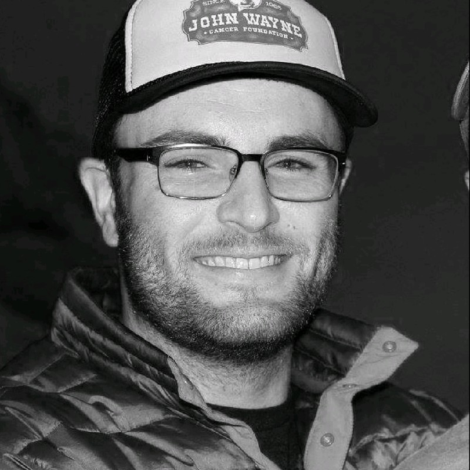

A San Fransisco Resident, Southern California native, Computer Scientist, Mathmatician and Thinker.
Results-driven Principal Software Engineer at Palo Alto Networks, focused on leveraging technology to solve complex security challenges. Proven ability to lead teams, drive innovation, and deliver high-quality solutions. My background includes expertise in Golang, Java, Python, and Linux, with a strong emphasis on cloud-native development and security. At Obsidian Security, I played a key role in scaling the platform and enhancing its security posture. I'm a lifelong learner with a passion for continuous improvement and a commitment to fostering inclusive and collaborative environments. B.S. in Computer Science from California Lutheran University.